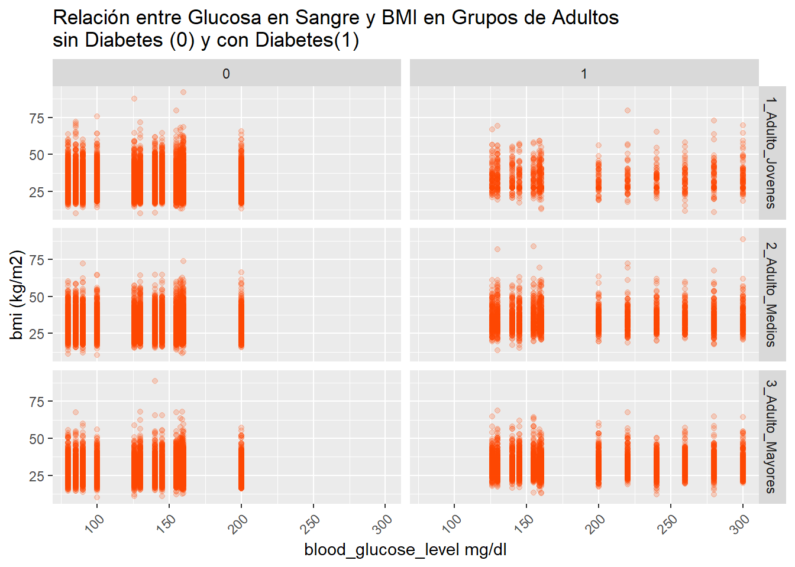
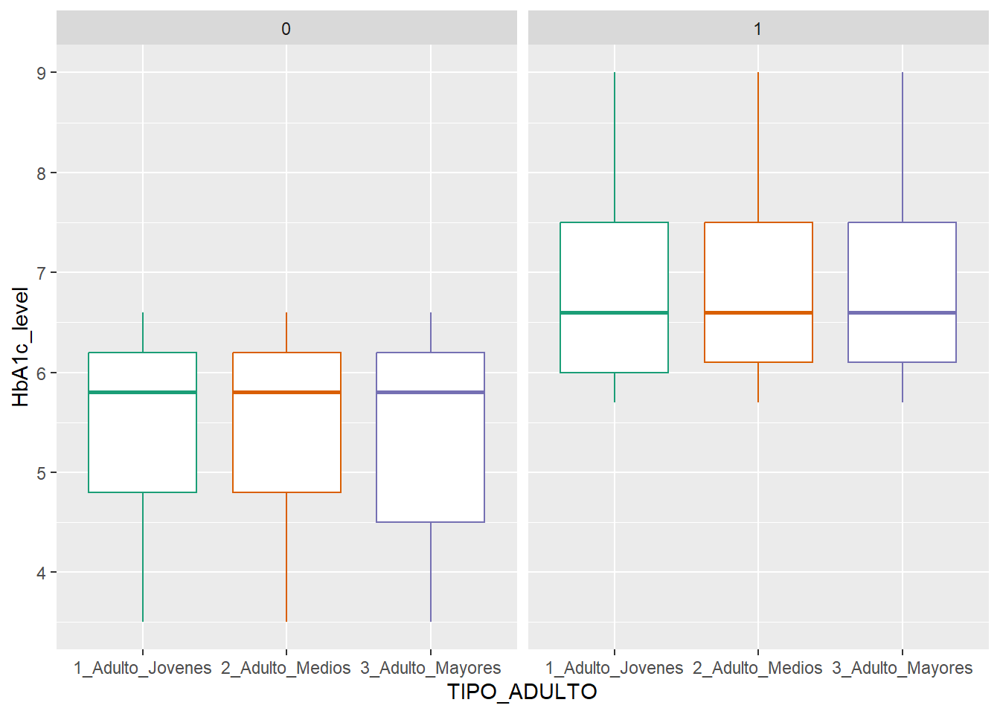
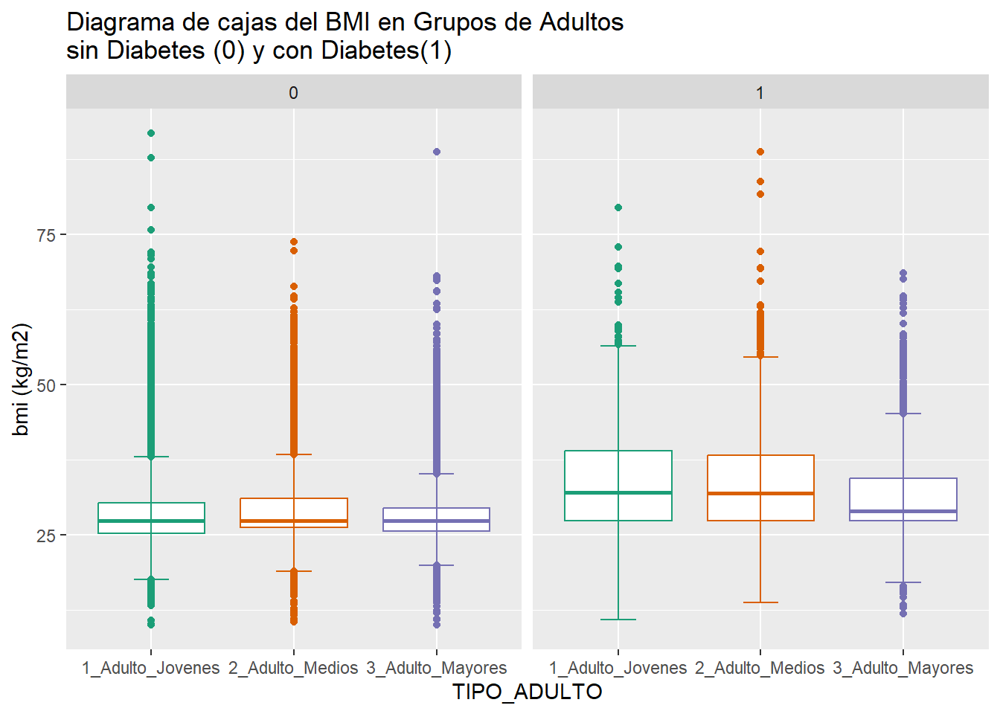
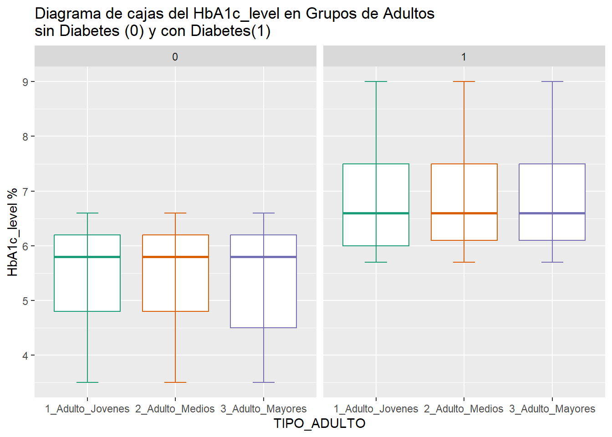
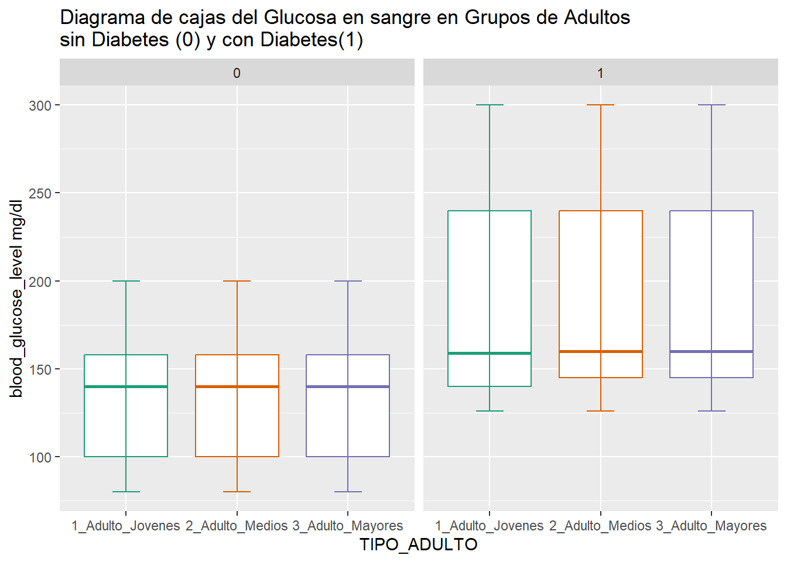
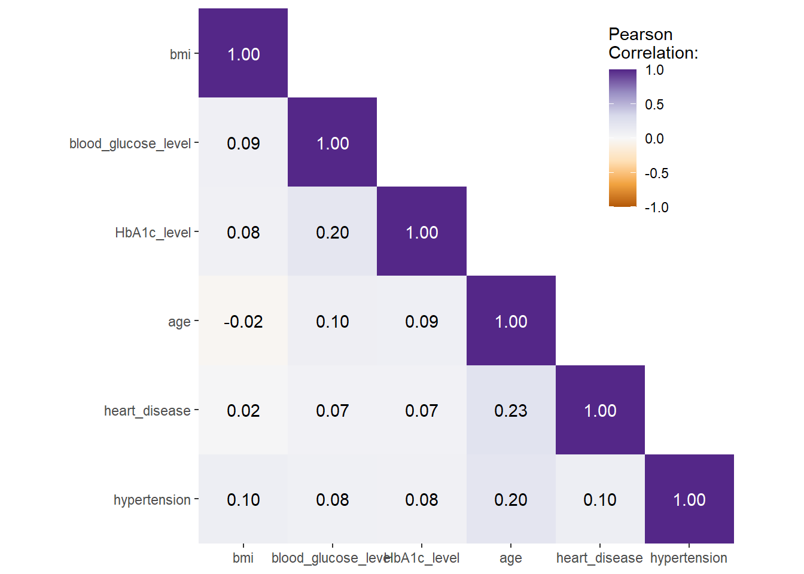

Estadística Descriptiva
A. DESCRIPCION DEL DATASET:
El dataset escogido tiene una cantidad total de observaciones de 100 000 personas, las cueles tienen diversas edades. Se detalla las variables del dataset en la tabla 3
 Para realizar el
analisis de acuerdo con el objetivo planteado, filtraremos el
dataset inicial para solo quedarnos con los adultos. a) Adultos
jovenes de 25 años a 44 años b) Adultos medios
de 45 añoss a 59 años c) Adultos mayores mayores a 60
años.
Para realizar el
analisis de acuerdo con el objetivo planteado, filtraremos el
dataset inicial para solo quedarnos con los adultos. a) Adultos
jovenes de 25 años a 44 años b) Adultos medios
de 45 añoss a 59 años c) Adultos mayores mayores a 60
años.
El primer paso sera cargar las librerias que permitiran el analisis descriptivo de los datos
#1.CARGAR LIBRERIAS PARA EL ANALISIS DESCRIPTIVO
library("ggplot2")
library("tibble")
library("tidyr")
library("dplyr")
library("forcats")
library("purrr")
library("prismatic")
library("corrr")
library("cowplot")
library("ggforce")
library("ggrepel")
library("ggridges")
library("ggsci")
library("ggtext")
library("ggthemes")
library("summarytools")
library("grid")
library("gridExtra")
library("patchwork")
library("rcartocolor")
library("scico")
library("showtext")
library("shiny")
library("plotly")
library("highcharter")
library("echarts4r")El segundo paso será establecer el directorio de trabajo y cargar los datos desde el directorio de trabajo
#2. Establecer el directorio de trabajo local
getwd() #Consultar el directorio de trabajo actual ## [1] "G:/Mi unidad/REPO/Adelmo/AdemoOchoaNolasco.github.io"setwd("G:/Mi unidad/REPO/Adelmo/AdemoOchoaNolasco.github.io") # Establecer el entorno de trabajoEl tercer paso será revisar los tipos de variable con ls funcion y el calculo de algunos estadistivos univariados
#3. Cargar datos y sumario de datos
data_diabetes<-read.csv('./diabetes_prediction_dataset.csv', encoding = 'UTF-8', sep = ';')
head(data_diabetes)## gender age hypertension heart_disease smoking_history bmi HbA1c_level blood_glucose_level diabetes
## 1 Female 80 0 1 never 25.19 6.6 140 0
## 2 Female 54 0 0 No Info 27.32 6.6 80 0
## 3 Male 28 0 0 never 27.32 5.7 158 0
## 4 Female 36 0 0 current 23.45 5.0 155 0
## 5 Male 76 1 1 current 20.14 4.8 155 0
## 6 Female 20 0 0 never 27.32 6.6 85 0str(data_diabetes)## 'data.frame': 100000 obs. of 9 variables:
## $ gender : chr "Female" "Female" "Male" "Female" ...
## $ age : num 80 54 28 36 76 20 44 79 42 32 ...
## $ hypertension : int 0 0 0 0 1 0 0 0 0 0 ...
## $ heart_disease : int 1 0 0 0 1 0 0 0 0 0 ...
## $ smoking_history : chr "never" "No Info" "never" "current" ...
## $ bmi : num 25.2 27.3 27.3 23.4 20.1 ...
## $ HbA1c_level : num 6.6 6.6 5.7 5 4.8 6.6 6.5 5.7 4.8 5 ...
## $ blood_glucose_level: int 140 80 158 155 155 85 200 85 145 100 ...
## $ diabetes : int 0 0 0 0 0 0 1 0 0 0 ...summary(data_diabetes)## gender age hypertension heart_disease smoking_history
## Length:100000 Min. : 0.08 Min. :0.00000 Min. :0.00000 Length:100000
## Class :character 1st Qu.:24.00 1st Qu.:0.00000 1st Qu.:0.00000 Class :character
## Mode :character Median :43.00 Median :0.00000 Median :0.00000 Mode :character
## Mean :41.89 Mean :0.07485 Mean :0.03942
## 3rd Qu.:60.00 3rd Qu.:0.00000 3rd Qu.:0.00000
## Max. :80.00 Max. :1.00000 Max. :1.00000
## bmi HbA1c_level blood_glucose_level diabetes
## Min. :10.01 Min. :3.500 Min. : 80.0 Min. :0.000
## 1st Qu.:23.63 1st Qu.:4.800 1st Qu.:100.0 1st Qu.:0.000
## Median :27.32 Median :5.800 Median :140.0 Median :0.000
## Mean :27.32 Mean :5.528 Mean :138.1 Mean :0.085
## 3rd Qu.:29.58 3rd Qu.:6.200 3rd Qu.:159.0 3rd Qu.:0.000
## Max. :95.69 Max. :9.000 Max. :300.0 Max. :1.000B. CREACION DE LOS GRUPOS DE ADULTOS - GRUPOS DE INTERES:
Como cuarto paso será el filtrado por edades, con la finalidad de quedarnos con los grupos de interés. Una vez clasificado los tipos de adultos, por edades, se establece la variable TIPO_ADULTO
#4. Fitrado - creación subset de interés
## ADULTO JOVEN 25 A 44 años
diabetes_25_44 <- data_diabetes %>% filter(age >=25) %>% filter(age <=44) %>% mutate(TIPO_ADULTO ="1_Adulto_Jovenes")
summary(diabetes_25_44)## gender age hypertension heart_disease smoking_history
## Length:26523 Min. :25.00 Min. :0.00000 Min. :0.000000 Length:26523
## Class :character 1st Qu.:30.00 1st Qu.:0.00000 1st Qu.:0.000000 Class :character
## Mode :character Median :35.00 Median :0.00000 Median :0.000000 Mode :character
## Mean :34.68 Mean :0.03148 Mean :0.004675
## 3rd Qu.:40.00 3rd Qu.:0.00000 3rd Qu.:0.000000
## Max. :44.00 Max. :1.00000 Max. :1.000000
## bmi HbA1c_level blood_glucose_level diabetes TIPO_ADULTO
## Min. :10.08 Min. :3.500 Min. : 80.0 Min. :0.00000 Length:26523
## 1st Qu.:25.39 1st Qu.:4.800 1st Qu.:100.0 1st Qu.:0.00000 Class :character
## Median :27.32 Median :5.800 Median :140.0 Median :0.00000 Mode :character
## Mean :28.71 Mean :5.449 Mean :134.9 Mean :0.03589
## 3rd Qu.:30.70 3rd Qu.:6.200 3rd Qu.:158.0 3rd Qu.:0.00000
## Max. :91.82 Max. :9.000 Max. :300.0 Max. :1.00000## ADULTO MADURO-MEDIO 45 a 59 años
diabetes_45_59 <- data_diabetes %>% filter(age >=45) %>% filter(age <=59) %>% mutate(TIPO_ADULTO ="2_Adulto_Medios")
summary(diabetes_45_59)## gender age hypertension heart_disease smoking_history
## Length:22537 Min. :45.00 Min. :0.0000 Min. :0.00000 Length:22537
## Class :character 1st Qu.:48.00 1st Qu.:0.0000 1st Qu.:0.00000 Class :character
## Mode :character Median :52.00 Median :0.0000 Median :0.00000 Mode :character
## Mean :51.89 Mean :0.1002 Mean :0.03523
## 3rd Qu.:56.00 3rd Qu.:0.0000 3rd Qu.:0.00000
## Max. :59.00 Max. :1.0000 Max. :1.00000
## bmi HbA1c_level blood_glucose_level diabetes TIPO_ADULTO
## Min. :10.50 Min. :3.500 Min. : 80.0 Min. :0.0000 Length:22537
## 1st Qu.:26.56 1st Qu.:4.800 1st Qu.:100.0 1st Qu.:0.0000 Class :character
## Median :27.32 Median :5.800 Median :140.0 Median :0.0000 Mode :character
## Mean :29.48 Mean :5.574 Mean :139.6 Mean :0.1092
## 3rd Qu.:31.92 3rd Qu.:6.200 3rd Qu.:159.0 3rd Qu.:0.0000
## Max. :88.72 Max. :9.000 Max. :300.0 Max. :1.0000## ADULTO MAYOR 60 a más
diabetes_60 <- data_diabetes %>% filter(age >=60) %>% mutate(TIPO_ADULTO ="3_Adulto_Mayores")
summary(diabetes_60)## gender age hypertension heart_disease smoking_history
## Length:25055 Min. :60.00 Min. :0.0000 Min. :0.0000 Length:25055
## Class :character 1st Qu.:64.00 1st Qu.:0.0000 1st Qu.:0.0000 Class :character
## Mode :character Median :70.00 Median :0.0000 Median :0.0000 Mode :character
## Mean :70.76 Mean :0.1737 Mean :0.1203
## 3rd Qu.:78.00 3rd Qu.:0.0000 3rd Qu.:0.0000
## Max. :80.00 Max. :1.0000 Max. :1.0000
## bmi HbA1c_level blood_glucose_level diabetes TIPO_ADULTO
## Min. :10.01 Min. :3.500 Min. : 80.0 Min. :0.0000 Length:25055
## 1st Qu.:26.04 1st Qu.:4.800 1st Qu.:126.0 1st Qu.:0.0000 Class :character
## Median :27.32 Median :5.800 Median :145.0 Median :0.0000 Mode :character
## Mean :28.55 Mean :5.694 Mean :145.2 Mean :0.1968
## 3rd Qu.:30.47 3rd Qu.:6.500 3rd Qu.:159.0 3rd Qu.:0.0000
## Max. :88.76 Max. :9.000 Max. :300.0 Max. :1.0000C. ESTADISTICA DESCRIPTIVA - GRUPOS DE INTERES:
Finalmente una vez seleccionado los grupos de interes, se tiene el siguiente dataset actualizado diabetes_Grupoadultos Se revisa las variables
diabetes_Grupoadultos <- bind_rows(diabetes_25_44,diabetes_45_59,diabetes_60)
str(diabetes_Grupoadultos)## 'data.frame': 74115 obs. of 10 variables:
## $ gender : chr "Male" "Female" "Female" "Male" ...
## $ age : num 28 36 44 42 32 42 42 37 40 30 ...
## $ hypertension : int 0 0 0 0 0 0 0 0 0 0 ...
## $ heart_disease : int 0 0 0 0 0 0 0 0 0 0 ...
## $ smoking_history : chr "never" "current" "never" "never" ...
## $ bmi : num 27.3 23.4 19.3 33.6 27.3 ...
## $ HbA1c_level : num 5.7 5 6.5 4.8 5 5.7 5.7 3.5 6 6.1 ...
## $ blood_glucose_level: int 158 155 200 145 100 158 80 159 90 126 ...
## $ diabetes : int 0 0 1 0 0 0 0 0 0 0 ...
## $ TIPO_ADULTO : chr "1_Adulto_Jovenes" "1_Adulto_Jovenes" "1_Adulto_Jovenes" "1_Adulto_Jovenes" ...Se realiza la tabla de frecuencias
freq(diabetes_Grupoadultos$TIPO_ADULTO , style = "rmarkdown", justify = "center", headings = TRUE, report.nas = FALSE)## setting plain.ascii to FALSE## ### Frequencies
##
## | | Freq | % | % Cum. |
## |:--------------------:|:-----:|:------:|:------:|
## | **1_Adulto_Jovenes** | 26523 | 35.79 | 35.79 |
## | **2_Adulto_Medios** | 22537 | 30.41 | 66.19 |
## | **3_Adulto_Mayores** | 25055 | 33.81 | 100.00 |
## | **Total** | 74115 | 100.00 | 100.00 |tabla_frecuencia <- table(diabetes_Grupoadultos$TIPO_ADULTO, diabetes_Grupoadultos$gender, diabetes_Grupoadultos$diabetes)
# Convertir la tabla de frecuencia en un marco de datos para mejor visualización
df_tabla_frecuencia <- as.data.frame(tabla_frecuencia)
colnames(df_tabla_frecuencia) <- c("Tipo de Adulto","Género","Diabetes Si (1) - No (0)","Freq")
# Imprimir la tabla de frecuencias por tipo de adulto y genero
knitr::kable(df_tabla_frecuencia, caption = "Frecuencia de combinaciones de Tipo de adulto , género y presencia de diabetes")| Tipo de Adulto | Género | Diabetes Si (1) - No (0) | Freq |
|---|---|---|---|
| 1_Adulto_Jovenes | Female | 0 | 16177 |
| 2_Adulto_Medios | Female | 0 | 12030 |
| 3_Adulto_Mayores | Female | 0 | 11976 |
| 1_Adulto_Jovenes | Male | 0 | 9391 |
| 2_Adulto_Medios | Male | 0 | 8040 |
| 3_Adulto_Mayores | Male | 0 | 8147 |
| 1_Adulto_Jovenes | Other | 0 | 3 |
| 2_Adulto_Medios | Other | 0 | 6 |
| 3_Adulto_Mayores | Other | 0 | 0 |
| 1_Adulto_Jovenes | Female | 1 | 535 |
| 2_Adulto_Medios | Female | 1 | 1239 |
| 3_Adulto_Mayores | Female | 1 | 2604 |
| 1_Adulto_Jovenes | Male | 1 | 417 |
| 2_Adulto_Medios | Male | 1 | 1222 |
| 3_Adulto_Mayores | Male | 1 | 2328 |
| 1_Adulto_Jovenes | Other | 1 | 0 |
| 2_Adulto_Medios | Other | 1 | 0 |
| 3_Adulto_Mayores | Other | 1 | 0 |
Relación entre Glucosa en Sangre y BMI en Grupos de Adultos
library(ggplot2)
ggplot(diabetes_Grupoadultos, aes(x = blood_glucose_level, y = bmi)) +
geom_point(color = "orangered", alpha = .2) +
theme(axis.text.x = element_text(angle = 45, vjust = 1, hjust = 1)) +
labs(x = "blood_glucose_level mg/dl", y = "bmi (kg/m2)", title = "Relación entre Glucosa en Sangre y BMI en Grupos de Adultos\nsin Diabetes (0) y con Diabetes(1)") +
facet_grid(TIPO_ADULTO ~ diabetes)
g <-
ggplot(diabetes_Grupoadultos, aes(x = TIPO_ADULTO, y = HbA1c_level,
color = TIPO_ADULTO)) +
labs(x = "TIPO_ADULTO", y = "HbA1c_level") +
scale_color_brewer(palette = "Dark2", guide = "none")
g + geom_boxplot() + facet_wrap(~ diabetes)
D. Tabla de estadísticos univariados - Adultos jovenes:
Se calcula los estadisticos univariados para el grupo de adultos jovenes
descr(diabetes_25_44$bmi, transpose = TRUE,
stats = c("N.Valid", "min","q1","med","mean","sd","q3","max","iqr"),
style = "rmarkdown", justify = "center", headings = T)## ### Descriptive Statistics
## #### value
## **N:** 26523
##
## | | N.Valid | Min | Q1 | Median | Mean | Std.Dev | Q3 | Max | IQR |
## |:---------:|:--------:|:-----:|:-----:|:------:|:-----:|:-------:|:-----:|:-----:|:----:|
## | **value** | 26523.00 | 10.08 | 25.39 | 27.32 | 28.71 | 6.40 | 30.70 | 91.82 | 5.31 |descr(diabetes_25_44$HbA1c_level, transpose = TRUE,
stats = c("N.Valid", "min","q1","med","mean","sd","q3","max","iqr"),
style = "rmarkdown", justify = "center", headings = T)## ### Descriptive Statistics
## #### value
## **N:** 26523
##
## | | N.Valid | Min | Q1 | Median | Mean | Std.Dev | Q3 | Max | IQR |
## |:---------:|:--------:|:----:|:----:|:------:|:----:|:-------:|:----:|:----:|:----:|
## | **value** | 26523.00 | 3.50 | 4.80 | 5.80 | 5.45 | 1.02 | 6.20 | 9.00 | 1.40 |descr(diabetes_25_44$blood_glucose_level, transpose = TRUE,
stats = c("N.Valid", "min","q1","med","mean","sd","q3","max","iqr"),
style = "rmarkdown", justify = "center", headings = T)## ### Descriptive Statistics
## #### value
## **N:** 26523
##
## | | N.Valid | Min | Q1 | Median | Mean | Std.Dev | Q3 | Max | IQR |
## |:---------:|:--------:|:-----:|:------:|:------:|:------:|:-------:|:------:|:------:|:-----:|
## | **value** | 26523.00 | 80.00 | 100.00 | 140.00 | 134.87 | 37.27 | 158.00 | 300.00 | 58.00 |E. Tabla de estadísticos univariados - Adultos medios:
Se calcula los estadisticos univariados para el grupo de adultos medios
descr(diabetes_45_59$bmi, transpose = TRUE,
stats = c("N.Valid", "min","q1","med","mean","sd","q3","max","iqr"),
style = "rmarkdown", justify = "center", headings = T)## ### Descriptive Statistics
## #### value
## **N:** 22537
##
## | | N.Valid | Min | Q1 | Median | Mean | Std.Dev | Q3 | Max | IQR |
## |:---------:|:--------:|:-----:|:-----:|:------:|:-----:|:-------:|:-----:|:-----:|:----:|
## | **value** | 22537.00 | 10.50 | 26.56 | 27.32 | 29.48 | 6.28 | 31.92 | 88.72 | 5.36 |descr(diabetes_45_59$HbA1c_level, transpose = TRUE,
stats = c("N.Valid", "min","q1","med","mean","sd","q3","max","iqr"),
style = "rmarkdown", justify = "center", headings = T)## ### Descriptive Statistics
## #### value
## **N:** 22537
##
## | | N.Valid | Min | Q1 | Median | Mean | Std.Dev | Q3 | Max | IQR |
## |:---------:|:--------:|:----:|:----:|:------:|:----:|:-------:|:----:|:----:|:----:|
## | **value** | 22537.00 | 3.50 | 4.80 | 5.80 | 5.57 | 1.09 | 6.20 | 9.00 | 1.40 |descr(diabetes_45_59$blood_glucose_level, transpose = TRUE,
stats = c("N.Valid", "min","q1","med","mean","sd","q3","max","iqr"),
style = "rmarkdown", justify = "center", headings = T)## ### Descriptive Statistics
## #### value
## **N:** 22537
##
## | | N.Valid | Min | Q1 | Median | Mean | Std.Dev | Q3 | Max | IQR |
## |:---------:|:--------:|:-----:|:------:|:------:|:------:|:-------:|:------:|:------:|:-----:|
## | **value** | 22537.00 | 80.00 | 100.00 | 140.00 | 139.62 | 41.95 | 159.00 | 300.00 | 59.00 |F. Tabla de estadísticos univariados - Adultos mayores:
Se calcula los estadisticos univariados para el grupo de adultos mayores
descr(diabetes_60$bmi, transpose = TRUE,
stats = c("N.Valid", "min","q1","med","mean","sd","q3","max","iqr"),
style = "rmarkdown", justify = "center", headings = T)## ### Descriptive Statistics
## #### value
## **N:** 25055
##
## | | N.Valid | Min | Q1 | Median | Mean | Std.Dev | Q3 | Max | IQR |
## |:---------:|:--------:|:-----:|:-----:|:------:|:-----:|:-------:|:-----:|:-----:|:----:|
## | **value** | 25055.00 | 10.01 | 26.04 | 27.32 | 28.55 | 5.46 | 30.47 | 88.76 | 4.43 |descr(diabetes_60$HbA1c_level, transpose = TRUE,
stats = c("N.Valid", "min","q1","med","mean","sd","q3","max","iqr"),
style = "rmarkdown", justify = "center", headings = T)## ### Descriptive Statistics
## #### value
## **N:** 25055
##
## | | N.Valid | Min | Q1 | Median | Mean | Std.Dev | Q3 | Max | IQR |
## |:---------:|:--------:|:----:|:----:|:------:|:----:|:-------:|:----:|:----:|:----:|
## | **value** | 25055.00 | 3.50 | 4.80 | 5.80 | 5.69 | 1.17 | 6.50 | 9.00 | 1.70 |descr(diabetes_60$blood_glucose_level, transpose = TRUE,
stats = c("N.Valid", "min","q1","med","mean","sd","q3","max","iqr"),
style = "rmarkdown", justify = "center", headings = T)## ### Descriptive Statistics
## #### value
## **N:** 25055
##
## | | N.Valid | Min | Q1 | Median | Mean | Std.Dev | Q3 | Max | IQR |
## |:---------:|:--------:|:-----:|:------:|:------:|:------:|:-------:|:------:|:------:|:-----:|
## | **value** | 25055.00 | 80.00 | 126.00 | 145.00 | 145.18 | 47.21 | 159.00 | 300.00 | 33.00 |Resumen del grupo de Personas con Diabetes
diabetes_Grupoadultos_SI <-diabetes_Grupoadultos %>% filter(diabetes =="1")
summary(diabetes_Grupoadultos_SI)## gender age hypertension heart_disease smoking_history
## Length:8345 Min. :25.00 Min. :0.0000 Min. :0.0000 Length:8345
## Class :character 1st Qu.:53.00 1st Qu.:0.0000 1st Qu.:0.0000 Class :character
## Mode :character Median :63.00 Median :0.0000 Median :0.0000 Mode :character
## Mean :61.78 Mean :0.2502 Mean :0.1517
## 3rd Qu.:73.00 3rd Qu.:1.0000 3rd Qu.:0.0000
## Max. :80.00 Max. :1.0000 Max. :1.0000
## bmi HbA1c_level blood_glucose_level diabetes TIPO_ADULTO
## Min. :10.98 Min. :5.700 Min. :126.0 Min. :1 Length:8345
## 1st Qu.:27.32 1st Qu.:6.100 1st Qu.:145.0 1st Qu.:1 Class :character
## Median :30.09 Median :6.600 Median :160.0 Median :1 Mode :character
## Mean :32.12 Mean :6.934 Mean :194.1 Mean :1
## 3rd Qu.:36.03 3rd Qu.:7.500 3rd Qu.:240.0 3rd Qu.:1
## Max. :88.72 Max. :9.000 Max. :300.0 Max. :1G. Analizando la variable bmi (kg/m2) - Body mass index:
Comentario Las medianas de los personas con diabetes son mayores a las que no tienen la enfermedad . Para todos los grupos de adultos.
## Analizando la variable bmi - Body mass index
# Boxplot.
g <-
ggplot(diabetes_Grupoadultos, aes(x = TIPO_ADULTO, y = bmi,
color = TIPO_ADULTO)) +
labs(x = "TIPO_ADULTO", y = "bmi (kg/m2)", title = "Diagrama de cajas del BMI en Grupos de Adultos\nsin Diabetes (0) y con Diabetes(1)") +
scale_color_brewer(palette = "Dark2", guide = "none")
g + geom_boxplot() + stat_boxplot(geom = "errorbar",
width = 0.25) + facet_wrap(~ diabetes)
H. Analizando la variable HbA1c_level (%) - Body mass index:
Comentario Las medianas de los personas con diabetes son mayores a las que no tienen la enfermedad . Para todos los grupos de adultos.
## Analizando la variable HbA1c_level - Hemoglobina glicosidica
g <-
ggplot(diabetes_Grupoadultos, aes(x = TIPO_ADULTO, y = HbA1c_level,
color = TIPO_ADULTO)) +
labs(x = "TIPO_ADULTO", y = "HbA1c_level %", title = "Diagrama de cajas del HbA1c_level en Grupos de Adultos\nsin Diabetes (0) y con Diabetes(1)") +
scale_color_brewer(palette = "Dark2", guide = "none")
g + geom_boxplot() + stat_boxplot(geom = "errorbar",
width = 0.25) + facet_wrap(~ diabetes)
I. Analizando la variable Glucosa en sangre (mg/dl) - Body mass index:
Comentario Las medianas de los personas con diabetes son mayores a las que no tienen la enfermedad . Para todos los grupos de adultos.
## Analizando la variable Glucosa en sangre
g <-
ggplot(diabetes_Grupoadultos, aes(x = TIPO_ADULTO, y = blood_glucose_level,
color = TIPO_ADULTO)) +
labs(x = "TIPO_ADULTO", y = "blood_glucose_level mg/dl", title = "Diagrama de cajas del Glucosa en sangre en Grupos de Adultos\nsin Diabetes (0) y con Diabetes(1)") +
scale_color_brewer(palette = "Dark2", guide = "none")
g + geom_boxplot() + stat_boxplot(geom = "errorbar",
width = 0.25) + facet_wrap(~ diabetes)
J. Prueba de Correlacion de Pearson:
Estamos usando Pearson porque todas las variables tienen una distribución bastante normal
corm <-
diabetes_Grupoadultos |>
dplyr::select(bmi, blood_glucose_level, HbA1c_level, age,heart_disease,hypertension,diabetes) |>
corrr::correlate(diagonal = 1) |>
corrr::shave(upper = FALSE)## Correlation computed with
## • Method: 'pearson'
## • Missing treated using: 'pairwise.complete.obs'corm## # A tibble: 7 × 8
## term bmi blood_glucose_level HbA1c_level age heart_disease hypertension diabetes
## <chr> <dbl> <dbl> <dbl> <dbl> <dbl> <dbl> <dbl>
## 1 bmi 1 0.0879 0.0796 -0.0229 0.0171 0.103 0.190
## 2 blood_glucose_level NA 1 0.199 0.0983 0.0691 0.0816 0.455
## 3 HbA1c_level NA NA 1 0.0931 0.0682 0.0804 0.443
## 4 age NA NA NA 1 0.232 0.204 0.213
## 5 heart_disease NA NA NA NA 1 0.104 0.157
## 6 hypertension NA NA NA NA NA 1 0.177
## 7 diabetes NA NA NA NA NA NA 1corm <-
diabetes_Grupoadultos |>
dplyr::select(bmi, blood_glucose_level, HbA1c_level, age, heart_disease, hypertension) |>
corrr::correlate(diagonal = 1) |>
corrr::shave(upper = FALSE)## Correlation computed with
## • Method: 'pearson'
## • Missing treated using: 'pairwise.complete.obs'corm## # A tibble: 6 × 7
## term bmi blood_glucose_level HbA1c_level age heart_disease hypertension
## <chr> <dbl> <dbl> <dbl> <dbl> <dbl> <dbl>
## 1 bmi 1 0.0879 0.0796 -0.0229 0.0171 0.103
## 2 blood_glucose_level NA 1 0.199 0.0983 0.0691 0.0816
## 3 HbA1c_level NA NA 1 0.0931 0.0682 0.0804
## 4 age NA NA NA 1 0.232 0.204
## 5 heart_disease NA NA NA NA 1 0.104
## 6 hypertension NA NA NA NA NA 1corm <- corm |>
tidyr::pivot_longer(
cols = -term,
names_to = "colname",
values_to = "corr"
) |>
dplyr::mutate(
rowname = forcats::fct_inorder(term),
colname = forcats::fct_inorder(colname),
label = dplyr::if_else(is.na(corr), "", sprintf("%1.2f", corr))
)ggplot(corm, aes(rowname, fct_rev(colname),
fill = corr)) +
geom_tile() +
geom_text(aes(
label = label,
color = abs(corr) < .75
)) +
coord_fixed(expand = FALSE) +
scale_color_manual(
values = c("white", "black"),
guide = "none"
) +
scale_fill_distiller(
palette = "PuOr", na.value = "white",
direction = 1, limits = c(-1, 1),
name = "Pearson\nCorrelation:"
) +
labs(x = NULL, y = NULL) +
theme(panel.border = element_rect(color = NA, fill = NA),
legend.position = c(.85, .8))